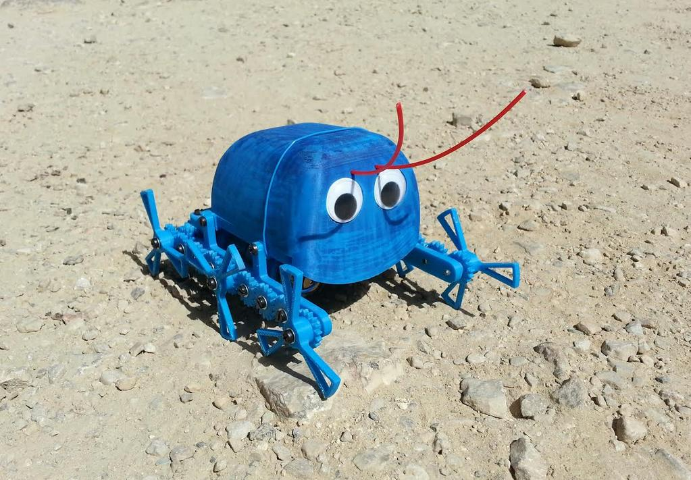
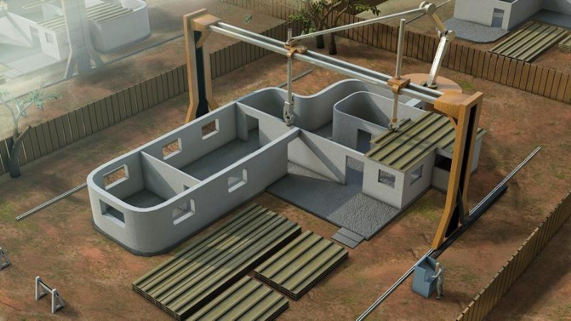
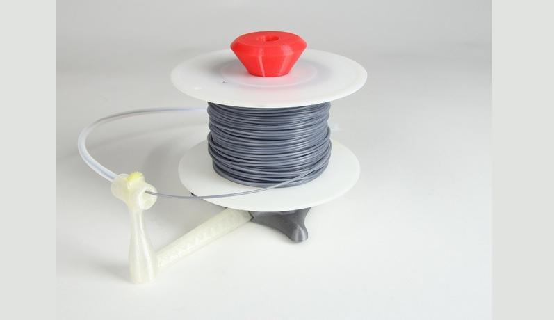
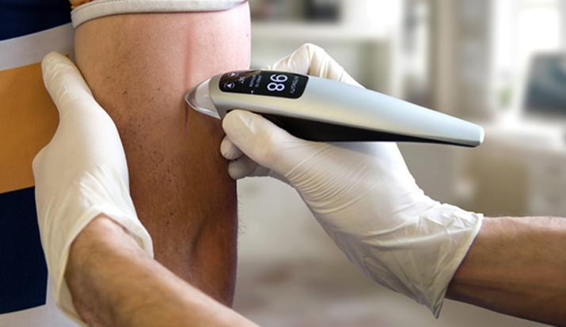
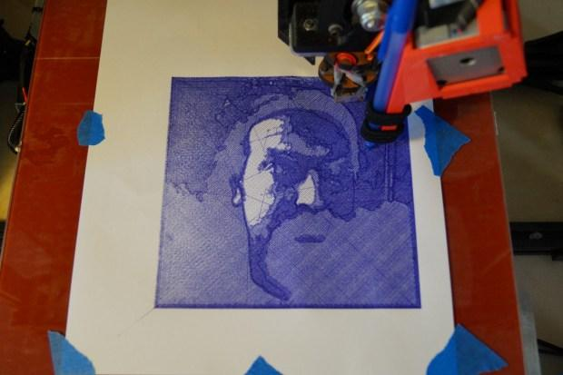
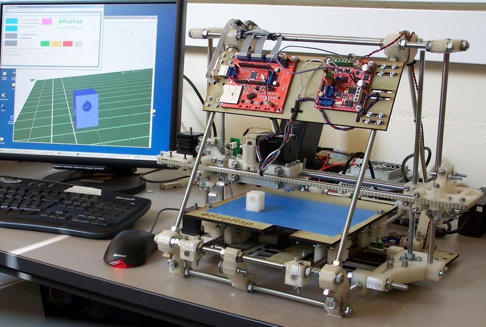

1：流水线工人
3D打印可以制造武器，可以制造房屋，可以制造玩具，可以制造医疗材料，还可以制造食物。甚至还能制造生命。它无所不能。因为无所不能，所以制造业首当其冲。于是不再需要流水线的工人。那么工人怎么办？唯一的办法是升级成工程师。
2：玩具制造厂
不再需要量化的玩具制造厂，每个人都可以设计自己的玩具，然后通过3D打印机打印。所需的费用不过是材料费用和服务费用。
3：建筑工人
房地产不再需要大量的民工。实际上房地产以后只需要一个工程师。他能维持设备正常运转就可以了。不再需要建筑工，不再需要包工头。
3D打印可以用于建设，比如在月球上建造太空基地。如果你把月球车和房屋的材料运送到月球，那么成本太大。但是你只需要运送一次3D打印机。剩下的事情就是传一个三维模型的图纸，然后3D打印机就可以打印出一切。
在火星上最适合建造管道和工厂，工厂把提取到的原料通过管道输出到基地。管道直接连接3D打印机，一座太空基地就会在很短的时间内建造完。
4：卖器官的人
3D打印还可以修补人体器官。把人体细胞采取下来并克隆复制，然后把得到的细胞组织作为原料打印出来，可以直接替换有问题的器官。从此不再需要器官移植。因为提取细胞和繁殖细胞很方便。
5：手工工艺品制作人员
3D打印还能进行艺术创作。不再需要手工者的劳动了。
6：厨师
现在食品都可以打印了，为什么还要厨师？大家都希望食品安全，希望后厨干净。出于对饭店的不信任，厨师完全可以下岗了。
感谢两个裁缝投稿
投稿信箱（逗比传媒）：post@dobemedia.com